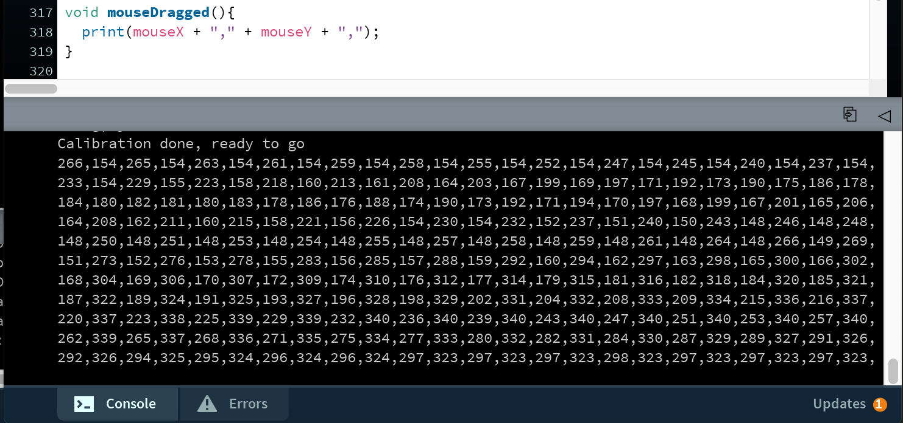

6.810 Engineering Interactive Technologies (fall 2020)
Problem Set Series: Multi-Touch Pad


Problem Set 4 (due Friday, Nov. 6, 2020, 11.59pm)
Now that you have the Processing code that reads and visualizes sensing data, you will build on top of it and come up with some cool applications. To accomplish this, you will do the following two parts:
- (1) Make the multi-touch pad a finger gesture recognizer
- (2) Visualize the touching data in 3D
(1) Make the multi-touch pad a finger gesture recognizer
Let's first build a finger gesture recognizer, where you can use the multi-touch pad as a draw pad.
This part will be built on top of your PSet3 Processing code.
To achieve full credits in this part, we ask you to implement at least 3 different finger gestures / drawing patterns that can be recognized by your multi-touch pad.
For example, you can implement your multi-touch pad to recognize letters (A, C etc.), some basic 2D shapes (triangle, circle etc.), or some simple symbols (check mark etc.).
You don't have to over-complicate on the finger gesture design, but do make the drawn patterns and recognized items reasonably similar and related.
For example, you can not have your finger draw one straight line on the multi-touch pad and the system recognizes it as "fish".
$1 Unistroke Recognizer Library
Like the blob detection in the PSet3, you don't have to implement the whole recognizing algorithm from scratch.
Instead, you can use this Processing library called $1 Unistroke Recognizer (ACM UIST '07).

$1 Unistroke Recognizer is a 2-D single-stroke recognizer designed for rapid prototyping of gesture-based user interfaces.
It is called "$1" because in machine learning terms, $1 is an instance-based nearest-neighbor classifier with a 2-D Euclidean distance function, i.e., a geometric template matcher.
Since it is an unistroke recognizer, there are some limitations you should take into consideration when design your finger gestures.
First, the gesture should be performed by one finger and contains only one continuous stroke.
For example, for the following 2 gestures designed for letter "A", only the left one can be recognized correctly by the algorithm as the one on the right contains more than one stroke:

In addition, the algorithm recognizes the stroke direction but ignores the stroke "orientation".
This is critical when implementing multiple gestures.
For example, the algorithm would be able to distinguish the following 2 finger gestures:

However, it will likely recognize these following 2 finger gestures as the same gesture:

For more details of the $1 Unistroke Recognizer library, you can go to the library's webpage.
There is also a demo website for the $1 Unistroke Recognizer, where you can test the library's functionality and get a sense of how it works. The link is here.
Add finger gesture
Once import the $1 Unistroke Recognizer library, you can add your customized finger gestures via the following function:
OneDollar.learn(String gesture-name, int[] x-y-coordinates);
You can obtain the x-y-coordinates for your desired finger gesture by either using your finger and draw the pattern on the multi-touch pad, or more conveniently using your mouse and trackpad + mouseDragged() function, and print out & record all the triggered points of your finger gesture.

Bind finger gesture to callback function
Once add the customized finger gesture, you would go ahead and bind it to a callback function, which will be triggered every time the algorithm detects the corresponding finger gesture.
You can bind the finger gesture to a callback function via the following function:
OneDollar.bind(String gesture-name, String callback-function-name);
Then implement the callback function :
void foo(String gesture-name, float percentOfSimilarity, int startX, int startY, int centroidX, int centroidY, int endX, int endY){
// do something fun
}
Track the finger gestures
After finishing the setup, you will implement the actual tracking in the code.
This is achieved via the following function:
OneDollar.track(int x-coordinate, int y-coordinate);
You should update the UI to display the detected finger gesture whenever you do the finger gesture on the multi-touch pad.
You could have something look like the following:

(2) Visualize the touching data in 3D
In this part, you will be implementing the multi-touch pad touching data in 3D, where the "height" of the roughly reflects how "hard" you are touching (remember in PSet3, the brightness of the 2D blob area roughly reflects how "hard" you are touching).


Start by downloading the skeleton code for the PSet4 3D visualization from here.
Once you open up the skeleton code, you will notice that it is quite similar to the PSet3 skeleton code.
As a matter of fact, if you have the PSet3 all implemnted corrected, you already have most of the code written!

For the functions that share the same name with PSet3 (i.e. readSerial(), setBaseLine(), substractBaseLine(), setColors(), and interpolate()), you can directly copy your PSet3 code into the corresponding functions.
For this part of the PSet, apart from the initialization in the setup() function, you are going to do the following three steps:
- Draw XYZ axes for 3D visualization
- Implement camera view and control in via keyboard
- Update the 3D visualization based on interpolated PImage (i.e. scaledbc)
Draw XYZ axes for 3D visualization
You will start by drawing out XYZ axes for 3D visualization in the drawAxis() function.
You can draw them as a standard Cartesian coordinate system.
The length of the X & Y axes should be the width and height of your interpolated PImage.
The length of the Z axes should be slightly over the pixel value range of your interpolated PImage for better visualization.
Once you finish the drawAxis() function, you should have something look like this (notice that the length of the X,Y,Z axes in the following image might not be accurate):

Implement camera view control via keyboard
In this part, you will be implementing an active camera view, which has the ability to change in zoom in/out, height in Z-axis and rotation in XY-plane.
The camera view will be controlled via keyboard buttons.
You should first initialize the "camera view" in Processing with the following method:
camera(float eyeX, float eyeY, float eyeZ, float centerX, float centerY, float centerZ, float upX, float upY, float upZ);
It sets the position of the camera through setting the eye position, the center of the scene, and which axis is facing upward.
Moving the eye position and the direction it is pointing (the center of the scene) allows the images to be seen from different angles.
You can also set the frame rate for better performance (e.g. if you are experiencing sketch laggs) via frameRate(int rate) function.
For more details about the camera in Processing, please refer to the offical documents here.
You will implement the camera view control so that:
- press key "Q" and "E" control change in camera zoom in / out
- press key "W" and "S" control change in camera height in Z-axis
- press key "A" and "D" control change in camera rotation in XY-plane
The changes in camera view point should look like something in the following.
Change in zoom in/out:


Change in height in Z-axis:


Change in rotation in XY-plane:


Update 3D visualization
The last part of the 3D visualization is to actually implement the 3D visualization based on your intepolated PImage.
Recall from the PSet 3, we intepolated the 9x8 multi-touch pad touching data into a much larger PImage and assign the intepolated value pixel by pixel.
We will be implementing something quite similar here, except the intepolated value now become the "height" (i.e. z-axis coordinate) + color.
You will implement the 3D visualization as a set of 3D points, where the X,Y coordinates are the row & column number of the pixel on PImage, and the Z coordinate the intepolated value of the pixel.
You will also implement a color gradient (of your choice) that represents the "height" (i.e. z-axis coordinate) information.
You might find your old friend map() to be helpful during some value assignments.
The resulting 3D visualization should look like something in the following.
No finger touching:


One finger touching:
Two fingers touching:


Grading
We will give 25 pts in total:
- 5 pts: have 3 different finger gestures implemented.
- 5 pts: the system correctly recognize all 3 different finger gestures and update the UI accordingly.
- 5 pts: XYZ axes correctly draw for 3D visualization and update correctly with the active camera view.
- 5 pts: camera view control correctly implemented with ability to change in zoom in/out, height in Z-axis and rotation in XY-plane.
- 5 pts: 3D visualization correctly implemented and updates with the touching data (and can at least visualizes 2 fingers touching simultaneously.